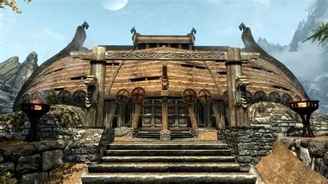

The Companions
The Companions are Skyrim's legendary warriors, heirs to the ancient order of Ysgramor’s 500. Based in Jorrvaskr in Whiterun, they are renowned for their honor, combat prowess, and deep Nordic traditions.
Joining the Companions allows one to learn combat techniques, earn glory in quests, and even uncover the secret of lycanthropy. Over generations, they have protected Skyrim from threats both mortal and supernatural.

Jorvaskr - The headquarters of the Companions in Whiterun.
Wolf - Many Companions bear the Lycanthropy curse.